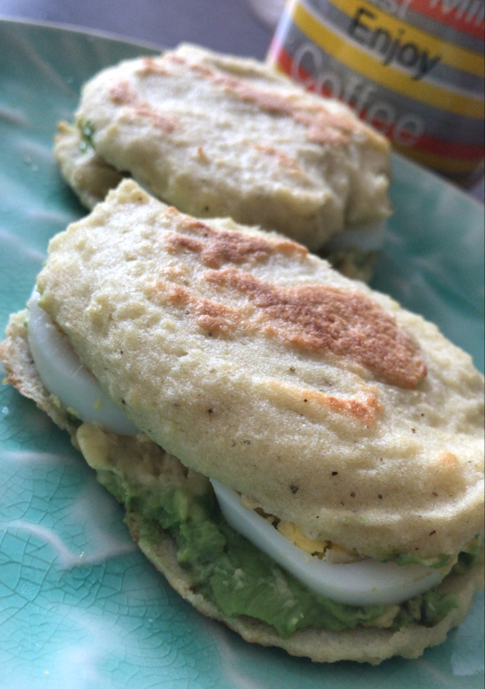

Healthy Cornbread

This a different cornbread as you might know until now, this bread is salty and the consistency is between an arepa and a cornbread.
At least, I made this recipe one day per week.
No need for oil, sugar or oven in this recipe! You just need a pan and healthy but delicious fillings for your cornbread!
Let's cook!
Ingredients:
- 3 1/2 tablespoon cornmeal
- 4 tablespoon water (room temperature)
- 1 egg
- Salt, ground pepper and ground oregano to taste
- Coconut or canola oil for cooking
Directions:
- In a bowl, mix cornmeal, salt, ground pepper and ground oregano.
- Add egg, stir until well blended.
- Add water and mix until a homogeneous consistency is achieved.
- Heat a little bit of oil (I use coconut oil) in a non-stick frying pan.
- Put 2-3 tablespoon of mix (to make 2 small cornbreads) or all the mix (to make a 1 medium cornbread), cook for 10 minutes with
covered pan over medium low heat.
- Flip and cook for 5 more minutes with the pan covered.
- An this cornbread is ready to fill with whatever you want.
My favortite fillers for this bread are avocado with boiled egg as you can see in the photo above. Other idea for filling is cottage cheese
with olives, it's just yummmmy!!!
Make sure to tag me @luzmasmeals or comment bellow when you make this healthy cornbread!
Happy friyay & see you soon!